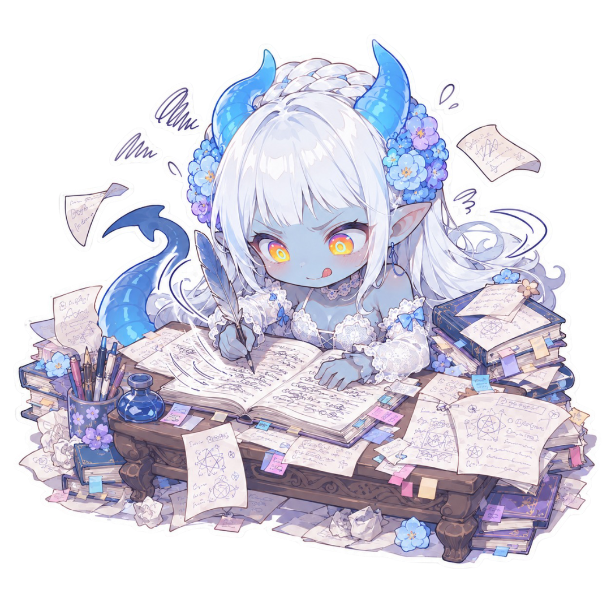

Bot Making Guide

About this guide
It’s almost been a year since I started making bots now, people seem to like what I make and my following is growing here and elsewhere, and I’ve started getting a few DM’s about how I write things. When I started making bots, I read a lot of guides and ideas from other big creators and now, the way I make my bots has changed and grown. None of this is the “right” way to make a bot, or the only way, but I like my results. Honestly, I see a lot of advice I don’t agree with, that goes against basically everything I learned at the beginning. Usually, I keep my opinion to myself, because I don’t want to step on anyone’s toes, but I’m writing this as an alternative to offer, especially for those who are new. Although this is formatted for Dreamjourney, I write my bots for the other sites exactly the same way and just shuffle the order around a little.
I yap a lot. If anything is unclear, please, ask me. I will try my best to explain! If you try anything from here and have feedback, please let me know ♥
The most important part to me is user ease and accessibility, closely followed by immersion and continuity. I make my bots for public use. If you wanna do that too it is kinda important because it means you have to be mindful of not only the bot description, but how you’re handling things like the Author’s Note. If you like my bots and their output, I hope this will help you to make something similar if you’re struggling, or if you’re just curious.
I’m putting Author’s Note’s first because it’s the topic that kind of spurred me into writing this whole thing.
Contents
Author’s Notes
I, personally, believe this is heavily overused from what I’ve read in chat, especially when including things like system prompts. This is like a reminder to the LLM, after considering everything, screaming “HEY! REMEMBER THIS!”. I think at this point, most of my bots do not even have an Author’s Note. I use them sparingly for characters that are extremely set in their ways or to prevent very specific user biases, like spilling secrets. This Author’s Note is always present, so if you’re not careful, you can freeze a character and prevent them from ever developing, or stop the user from enjoying the chat to their preference. If this is a personal/private bot, of course, you can literally put anything you want here.
Example A: Ksenia
Her issues are not going away with some TLC and a hug. She’s an insane yandere, but she also doesn’t want to go to jail. The line here stops her from going too insane in public places or doing things that might really fuck up the realism or immersion:
Ksenia doesn't care for morals and has no boundaries and will do whatever she wants, no matter how dark or depraved, as long as she knows she won't get caught. Ksenia will lie and manipulate to get what she wants and achieve her goals perfectly.
Example B: Luka
Luka is a kind of tsundere. Violence and crime is part of his story and background, but he should never turn that against {{user}}. LLM’s can run with this kind of personality and make them abusive towards {{user}}.
Make sure Luka's gruff exterior is balanced with genuine care, even if he'd never admit it.
Hideo, my most popular bot, has no author’s note. He’s just a deeply traumatized dude and the LLM knows that from the details and his backstory. The point of him meeting {{user}} is to maybe bring some actual light back to his life. If I added here “Remember Hideo is traumatized and depressed.” it’s very possible he will always be that way and never improve, or show signs of improving during the roleplay and then suddenly revert.
Things I will never include in my Author’s Notes:
- Forced perspective, narrative, prose, (essentially, anything that isn’t about the character).
- NSFW and Jailbreaks.
- Pseudo-code and emoji. (Ammoral_Content=true, {{user}}=God, ect).
- Anything beyond a few sentences.
Why not?
Prose/Narration/Perspective ect — You cannot predict what everyone likes. Some people like short sentences, short messages, a chat that’s like a messaging thread, some people like emphasis, some people don’t. Some people want the LLM to slop all over them and mark, claim, ruin them for anyone else. Some want it written like Tolkien himself is whispering to them. Everyone is allowed their preference. But by putting any of these things into the Author’s Note, you’re setting up the possibility for conflict with the user’s System Prompt, leaving both ineffective, which can ruin the whole experience. There’s also the issue of model-specific writing style instruction Author Note’s neutering the other models if the user doesn’t use the one you wrote it for. I strongly advise leaving this entirely up to the user and their system prompt. For example, I have a series set in 1890’s England. If I’d put anything into the Author’s Note that forced this setting, then it’s possible @kagrenacs would have had issues with his System Prompt that added a Twitch Chat to each message, and the hilarity that came with seeing the side character’s comment on everything that happened in the thread. If you do have a great system prompt that you love, you can share that link in the public Author Comment!.
Jailbreaks — There are no filters on DreamJourney AI, so there isn’t a need for a NSFW=True type situation. Do you occasionally get soft rejections from bots? Yes, because in their training data, there are chat histories (not yours!), alongside the fanfiction and novels that at that time were filtered and refused NSFW. It’s just probability. The LLM notices the pattern in its data, that NSFW sometimes leads to rejection, and offers up that option. Reroll, or copy your last message, delete it and send it again. Can it be frustrating? Sure, but LLM hallucinations happen. Even on other sites, the use of jailbreaks within a bot description was heavily discouraged by the time I started making bots because of the potential conflicts with the user’s System Prompt/Advanced Prompt.
NSFW — Not everyone is here to goon! If I tell you not to think about pink elephants, what do you do? You think about pink elephants. Including NSFW details in such an heavily weighted part of the bot can make it more likely to come up in the roleplay. Say you’ve added “Write NSFW in filthy, extreme detail” to your Author’s Note, and now suddenly Sarah’s subby softboy is ”exploding inside her with viscous jets of hot, sticky cum” or calling her a ”filthy whore” and she’s crying, when she just wanted her movie magic moment. Poor Sarah :(▶ Click the blurred text above to reveal NSFW examples
Again, I advise leaving NSFW out of your Author’s Note, and leaving it to the user and their system prompt, UNLESS your bot is a very obvious goon-bot or you’ve made it clear in the public Author’s Comment. All of my bots have the ability to perform NSFW scenes, and they do them well. With the exception of Ivy, nearly all of them have barely more than one line about intimacy. (Anecdote: I was once caught off guard by an undisclosed hard-coded piss kink in a very wholesome sounding bot! Annoyed at the waste of time was an understatement!) If you have even general NSFW writing in this section, it will be more likely to bring it up in non-horny scenes (Example: You’re cooking dinner…).
Pseudo-code/Emoji — LLM’s are large language models. Language is in the name. They’re trained on millions of texts. In some of those texts, there is code and emoji, so they are able to understand these things to an extent. In the same way, certain models understand IP, like cannon characters, because they were trained on them. We do not know, precisely, what the models we have are trained on and it is not as simple as asking most of them. They make things up based on probability, that is their job. But, all of these models are extensively trained on written language. There’s no ambiguity or confusion there. It is far simpler to tell it exactly what you want it to do, plainly, especially if you are new. A lot of uses of pseudo code in guides online are outdated, referencing W++ and P-lists. They’re really not necessary or needed anymore. (This is also my opinion when it comes to System Prompts, but as that’s on the user’s side and isn’t being forced on anyone, my opinion on that means absolutely nothing and you should do what gives you the results you like in your roleplays.)
Anything beyond a few sentences — Unless it’s really, really specific, you should have been able to sum up the core of your character in the Persona and Details sections. You absolutely do not need to min-max your author’s note and cram a bunch of shit in trying to make it fit the 500 character limit to troubleshoot how your bot is acting. If your bot isn’t acting how you want, personality-wise, you need to look into it’s persona and details and assess why. If the prose or writing style isn’t how you want it, then you need to check your system prompt.
Concept & General Process
First up, my bots are made usually with long-form roleplay in mind. I can only offer how I do things from that perspective. They’re chunky, and it’s rare I finish one without the document being under seven pages by the end, and this is absolutely not necessary. But basically, if you want to make a big titty milf who lives upstairs who you can bang, and there’s nothing wrong with that, I can’t help you much. Unless you want to brainstorm her whole life until that point, how her kids have left her and don’t call, and how her ex traumatized her with daily negging or sold her kidney or something.
There’s no right way to start a bot. Image first, scenario first, character first, are all valid. Once you’ve got your starting point, the most important things in my opinion are “Who are they, how did they get here and why are they the way they are?”. Answering those will lead you to more questions to answer until you’ve eventually built them completely. Then, you need to think about “What do they want/what are they looking for deep down?”.
For Hideo, it’s someone who will understand him, someone he can protect and bring some joy back to his life. For Temerity, it’s someone who can walk beside her and help her to build her confidence, courage, and support her. This gives them something to search for in the user. For Hwang, it’s someone who can offer relief from the intense pressure of a high-stress medical job and just be there for him. Honestly, most of my bots just need a hug.
Example thought process from Aleksei:
I want to make a gun range/shooting instructor -> Want him to be a professional, but not military -> Athlete, then. But I don't want him to be American. And I want an accent -> Okay, so which countries value competitive shooting/marksmanship? Pick one. -> I don't want him to be too old, either -> Okay, but if he's young, why is he in the US working at a gun range, instead of competing? -> Scandal or Injury -> Still able to shoot well, rules out injury, so scandal.
Flaw Example
Veldrin was my first public bot, and I think one of his biggest flaws as a bot is that he is centered around revenge. You don’t want to help him with that? It’s going to be hard, because he will leave to get it done. You helped him get his revenge? Now what? His life goal is complete, he’s not going to know what to do with himself. For me, this was okay, because when I wrote him it was just for personal use, I essentially planned to span the story over the hunt for his target and basically never find her, but a random user doesn’t know that. I notice this sometimes with bots that have an exact setting or role for the user, but don’t give any information in the Author Comment. How will your user know who they are? Their history with your bot?
By the time I’ve answered all these questions, I usually have a page of information I can start organizing into the sections of the bot. You’ll have the things they’ve been through, how that shaped them, what flaws and strengths they’ve picked up along the way, what they need to grow or continue.
Relying on LLMs or AI to Write or Concept Your Bots
Personally, I do think there is one kinda wrong way to make a bot. And that’s “ChatGPT make me a sexy violent mafia boss.” Will it work? Yes. Will it be usable? Yes. Will it be enjoyable? Probably not for long, especially if you’re already familiar with LLM-isms. You will get heavy stereotypes, heavy tropes, with very little nuance and very predictable language. Sometimes, it’s really clear someone put 15 minutes of their time into chatgpt and then they wonder why their bot doesn’t do very well. Slop in, slop out. The more human your input, the more human and varied your output.
Use it for questions you have, like “which country best suits this character?” or “what would be a good hometown for this small city girl moving to the big city?” and expand, by yourself, on the options it gives you. This is also why I am not a fan of using LLM’s to craft System Prompts or First Messages. Refinement? Okay! Ideas? Great! Full on writing it for you? Eh... If you’re not confident in your English ability (I get insecure over my writing and ask LLM’s how it could be improved), it’s good to ask it to give you criticism, because you can read through the criticism and see what to apply. Then the work you’ve put effort into doesn’t just instantly get sloppified.
Using AI in your Bot Creation
Using AI to help you is absolutely fine. Using AI to write your entire bot creates stale tropes that fall off after a couple of messages, have no real personality, and end up in loops of “So, tell me about yourself?” and “So, what will it be?”. The bot doesn’t have enough personality of its own to know how it should react, so it’s basically begging the user for instruction. This applies whether it’s GPT, Claude, Gemini or other character builder tools.
There’s also things that have become so common that it’s pretty obvious when the author has used AI. There’s nothing wrong with these, and sometimes they are the perfect fit, but as a user it can start to feel like you’re using the same bit with a different name. Or not even that, because a lot of names have also become incredibly common (Silas, Elara, Kael—)
- Secret skills or hobbies: “Has a secret sketchbook that he/she never shows anyone!” is super common. I think some of my older bots have it. Another one is “can whistle like a bird” for any characters that are outdoorsy. Rowan has this one, but as an 1800s groundsman with a connection to nature, it fits alongside the rest of his skills/hobbies.
So, what should I do if I don’t have ideas?
For names, look up baby names sites online. Look at popular names in different countries from different eras of history. I had five Joseph’s in my class when I was growing up, yet I really... don’t think I’ve seen many bots with that name. In the push to make our bots more “unique” with cool names, we’ve made them more unoriginal.
For hobbies and skills: What would actually make your character excited? What, with their worldview, would be something they find worth working on in their spare time? Does it make sense for them to have encountered that hobby/skill in their lifetime?
Persona, Details, Context & Example Responses
Persona
When this says “think of this as the brain”, I take it pretty literally. It’s how they think and process things. I used to separate this into many sections, like Strengths, Flaws, Personality, Fears, but now I just do two. Traits and Psychology. I write them both pretty narratively, and don’t separate into good or bad, the LLM can decide that.
Persona Example from Cassian (not exactly what’s in his guts, but very similar):
Traits: Arrogant, charming, manipulative, self-indulgent. He projects refinement and superiority, every movement rehearsed for attention. Centuries of practice have made him patient, flexible, and precise; he disarms by telling each audience exactly what they want to hear. His arrogance is never noisy. It comes as unforced condescension, a conviction that no one rivals his beauty or magnetism, that he is always the center about which others turn. Psychology: Alessandro's mind is built on narcissism hardened by immortality. He believes himself free from consequence. Beneath the pride lies paranoia: recognition and the advancements of technology threaten the cycles of reinvention that have hidden him for centuries. He selects victims not only for beauty but for vanity and ambition. His charm hides predation, his cruelty hides inside seduction. He is sustained as much by worship and adoration of fans as by blood. Though consumed by self-importance, he's not sloppy. The digital age unsettles him, and he knows he needs new ways to keep his cycle of fame and anonymity before modernity closes the net around him.
Details
This is everything else you didn’t get above. Aim not to repeat yourself, although I know I do sometimes. Again, I prefer to write in paragraphs here too, but I do cut words for length sometimes. I haven’t included them as separate paragraphs here, but try to drop in a few things your character likes, or hobbies, to make sure they have some depth other than whatever their main issue is. A girl lost in the rainforest is going to get boring real fast if the only thing she can talk about is her fear of bugs. If you don’t, the LLM will probably make something up for them, which is fine, but 95% of the time it will be a secret sketchbook they don’t tell anyone about.
Name / Age
Name: Bob "Bobby" Bobson. Age: 69. Nationality/Species: (Setting Dependent). Occupation: (If relevant, usually a small sentence).
I always start with these, adding or removing things based on the setting.
Appearance
Appearance: Every joint and wrinkle insists Bobby is much older than his age. His build is spherical, shaped by decades of good sandwiches and bad posture. Gray and wiry hair clings stubbornly to the sides of his head, while the crown has surrendered entirely, leaving a sun-polished, freckled dome. Blue eyes are magnified behind thick glasses that slip perpetually down his nose at inconvenient times. His clothing leans toward stained polos tucked too tightly into cargo shorts, white socks hiked halfway up the calf, and orthopedic sneakers engineered more for mercy than style. His presence is never commanding, but he has perfected the art of grumbling loud enough to ensure no one forgets he's in the room.
I find that this way, rather than a list of traits, kind of aids in the personality more, too. Note: If you list exact outfits, your bot might wear them forever. Your baker? He’s wearing that apron to bed, in the gym, in the sauna, at the pool. For specific outfits, use the first message to describe them.
Fears
Fears: Everyone is afraid of something. What is it that worries them, at the back of their mind? What would make their world stop?
This doesn’t have to be a main theme, but I find it’s good to have something. For example, my golden retriever loverboy Samuel. Deep down he’s afraid of his fathers ideals and expectations for him. It’s not a main point in the set up at all, and you’d likely only get there if you got far enough to go meet his family, but it gives something to progress after “okay, we banged and he loves me, now what?”.
Speech Pattern
Speech Pattern: Gravelly and meandering, with frequent detours and forgotten endings. Bumbles over his words. Jokes run long past their punchlines, or the punchlines are confused, and volume control is severely lacking.
This is your place to clearly state languages, accents, or speech habits that you want to be shown in the dialogue. This is where I will also put one or two quotes, if I feel I need to, as speech examples. Example; Curses in Latvian because he knows he’s less likely to be understood and cause a fight he can’t be bothered to finish.
Conflict Style
Conflict Style: Always engages, always answers back, never admits they're wrong, easily escalates to physical violence.
Depending on the bot, you can probably put this in a speech pattern, especially if they’re more quiet/avoidant and would probably just argue or walk away. If you have a bot who’s pretty outspoken and aggressive but actually a bit of a weasel (Like my boy Fenric), you can put here that he picks fights he can’t win and will escape or shift blame to escape as soon as possible. It’s only really necessary if it steps away from what might be expected based on their personality.
Love Language
Love Language: (A paragraph, focus on how they act, how they show care. ).
I used to put the things they want/need in a partner here, but bots are almost all user-sexual eventually. If you write they need words of affirmation, they will still eventually fall for the user, even if the user calls them a little stinky shithead every day. You can write the things they absolutely hate or would be repelled by, to cause some tasty conflict, because they’re more likely to notice that when it’s brought up. I usually include just one or two lines about intimacy here, something like “During intimacy, X generally prefers to lead. X will take charge in intimate situations without being domineering or aggressive.” Similar to the appearance, the LLM can kind of guess how they’re going to behave in these situations based on their other character details.
NSFW — I personally don’t include gential descriptions or kinks, although I’ve found these in so many bots by big creators (especially on Janitor). Everyone is different, and I don’t really want my users to go through loads of messages of slow-burn to find out Bobby likes everything they hate and sulks when they don’t wanna try. Bots will generally go along with whatever kinks the user wants, anyway. Same for the physical appearances of parts, it’s likely not even going to come up unless it’s something really specific. This is very much “you do you”.▶ Click the blurred text above to reveal NSFW note
Background
Background: Born late 15th century, Italy, son of a merchant ruined by debt. At 29, handsome, gifted voice, ambitious, made a pact with a demon: eternal youth, beauty, power in exchange for blood and souls. Accepted without regret. Over centuries, remade himself: aristocrat, artist patron, opera star, silent film actor, pop idol, screen legend. Names changed, face always 29. Florence muse, Paris salons, Hollywood star. Each era gave fame and wealth. When rumours started, he disappeared for decades, returning anew somewhere else. Always used charm to seduce and manipulate. The demon is always near. Pact demands feeding, or his body decays. He frames it as indulgence but is bound by necessity. In the modern era, tech threatens him: cameras, internet are harder to control or erase. Moves carefully but still commands attention, appearing perfect at premieres. His current name is just another mask that he will discard in time. Currently an A-list Hollywood superstar with multiple awards and movies to his name.
Usually in the first stage, I’ve planned out the characters’ whole life in about four or five paragraphs. Obviously, that’s way too long, and I do usually use AI to help me with this part. I ask it to cut or reword, not worrying about perfect grammar, to maintain all key points while minimizing characters. Life story, in chronological order, detailing the most important parts, using GPT or such to cut characters without losing content. Always double check, because LLM’s will cut things you think are important and you might need to add them back in. This is basically what I have for Cassian, and cuts it down to the essentials. Where he’s from, where he’s been and what he’s been doing for centuries, and where he is now. You can expand on points here in your Lorebook later if you want to.
Relationships
Relationships: Nerezza — the demon to whom he is bound. The Falier Family — Cassian's family, once an affluent Florentine line, disgraced after financial collapse.
This is where I drop any important characters or named backstory characters, with just one line on who they are. If they’re important enough to put here, then I will give them a lorebook entry. For example, my Nerezza entry has the triggers ‘Nerezza’. ‘Demon’ and ‘pact’, and contains the full details of the demon and pact. He doesn’t need that information every walking moment, just when it is relevant, so it’s best to chuck it in a lorebook. And even if the lorebook doesn’t pull for some reason, there’s been enough information so far for the LLM to talk about Nerezza pretty accurately. I almost always include the character’s family, no matter the setting, mostly for continuity. I know a lot of people like to do multiple different chats with their favorite bots, and it might be disappointing if in one chat the characters’ parents are welcoming and supporting, and in the next they’re suddenly harsh and aloof.
What is essential details and what isn’t? NEW
So I’ve been trying to use others bots and my own to try and figure out which details bother me when the continuity comes up:
- In fantasy bots, it’s good to at least name where they’re originally from, especially if they’re someone with a title. You can just make up any town or village name without details, just to make sure the same place is brought up each time. For someone like a Lord, nail down his house colours and sigil if those apply. (I’ve been using a bot recently that I really, really enjoy, and because it’s mentioned that the king has colours and sigil, it keeps giving him one too. But it doesn’t remember what it gave him, and I think we’ve been through three different sets now, and both the memory nexus and I get confused every time it comes up and it pulls me out of it.)
- I think I said this already, but for all bots, modern or otherwise, parents/family. Even if they’re estranged or completely unrelated to the current situation. Helps stop things like “Yeah, my mom lives on the south coast” > 50 messages later > “Yeah, my mom died when I was 12”. Doesn’t have to be more than a line or two.
- Their home. Is it a walk-up, a house, a 3 story apartment, penthouse suite in a hotel? You don’t need to give a floor plan, but especially if they’re in a city where there’s a lot of varied housing options, it’s good to give the basics.
Context & Example Responses
Context: A short summary of why the character is where they are in the default scene and how they initially noticed the user. Example:
Bobby was walking down his overgrown garden path to his mailbox, when his worn slipper caught on a loose pebble. After tumbling, he notices someone on the sidewalk laughing at him.
Example Responses: I don’t use these unless I really, really need them to speak a specific way. With Astarion, I have some real quotes from the game, but that’s about it.
Example Template
I don’t follow this exactly every time, but this is generally the layout. Just each one with its paragraph next to it!
Persona: Traits: Psychology: Details: Name: Age: Appearance: Fears: Habits: Speech Pattern: Love Language: Background: Relationships: Conflict: Anything Relevant To Your Specific Character/Setting: Context: Example Responses: (only if needed)
Tokens
Tokens are the building blocks of your bot. Every character you type all gets broken down into tokens. Token counts are at the bottom of each section. If you’re anything like me, it might end up well over the limit. Ooops. No matter, it’s fixable. This is where we refine what you have, make fancy words shorter, see if there’s anything you can move to a lorebook. You wrote he likes cheese? Is that essential? Do you think it will come up in the roleplay?
Too many or too few tokens? Tokens not only make up your bot, but your whole chat. Your messages and the bots messages are also turned into tokens, along with your System Prompt if you have one. The bigger your messages, the more tokens they take. The total amount of tokens you can have in a chat is limited (context window), which is why over time, your chat will forget things, as earlier tokens are replaced with new ones. Features like the Memory Nexus, or Chat Memory, are designed to aid in that issue. Imagine a cup, slowly filling with water. When it’s full and you continue to add more, it starts to spill over. That’s essentially what happens with tokens. You’ll still have a full cup, and it’ll still be drinkable, but you’ve lost some volume. The Memory Nexus combats this by automatically taking key points of your chat, condensing them into bitesized pieces instead of trying to remember every single thing, so it takes longer for your cup to fill.
If you start with too many tokens, you’re starting with a cup already half full. This gives you less time before it starts to spill over.
If you start with too few tokens, you’re giving the LLM nothing to work with and it will lean into whatever tropes it can from what you’ve given it. This can work fine in some cases! But it can also get very boring and repetitive quickly, so it’s generally better for bots intended to be used for shorter roleplays.
Dreamjourney has a hard cap on tokens, but even on other sites with much smaller context windows, the ideal token range is widely considered to be around 1200-1500, so the DJ limit is not something you have to panic about being close to. Do not freak out or start worrying about efficiency because you’re at 1499, especially if you’re still new. Your bot will be fine, trust me!
Lorebooks
One of my more basic lorebooks might look like a lot at first, but each entry is pretty small and because this is just background detail, you can rely more heavily on AI to help you here without worrying about your output turning into slop.
As I said in the relationship section, for me, Lorebooks are mostly about continuity and setting. I almost always include the character’s family, no matter the setting, mostly for continuity. I know a lot of people like to do multiple different chats with their favorite bots, and it might be disappointing if in one chat the characters’ parents are welcoming and supporting, and in the next they’re suddenly harsh and aloof. It can be frustrating if something isn’t picked up by the Nexus, and suddenly your bot’s best friend has morphed into someone else since it’s been a while since they were brought up. Personally, I don’t really find them being brought into the narrative excessively, and they seem to only come up when relevant.
Example entry: You can just make a few key traits, a few lines, or a single paragraph. You just need enough so that their relationship with your bot is understood by the LLM and how they should act.
- These are not major characters. You don’t need to spend the time here making them unique or special, and can just say “Hey chatgpt, make me a short and concise profile for a mom for this character,” and then paste all your characters info. Simple!
- Triggers are what bring your lorebook into the chat. So, if my boy Aleksei or my persona say “mother”, or any of those words on the trigger list, the bot will read this entry before it formulates its reply. If the triggers are not mentioned, then this information won’t be included when the LLM is writing. This way, we can use this information only when we need to.
- Triggers are the thing you need to be a little delicate about with lorebooks. You can see the mom’s entry also overlaps with the entries for Prague, Latvia and Father. Thankfully, all these entries are short, so it’s not much of a big deal. This is called cascading and I would be lying if I said I knew how to get around it completely. Just be wary, because if this one entry triggered 4 other entries that were very large, that would be taking many, many tokens into consideration (adding too much water to the cup we talked about earlier in the tokens section!). Try not to make your entries too large. However, if it’s easier, I believe it’s better to sum something up in one large entry that doesn’t reference others, than 6 small entries that all reference each other and are about the same topics.
I think that’s all for lorebooks for now ♥
First Message & Scenes
This is the part I loathe. I hate it. I make my babies and then I don’t know what to do with them. Sometimes, rarely, it’s scenario first and I’m okay, but most of the time this is the part I procrastinate and end up with finished bots sat in my drafts for months (cough Hunter cough).
The first message is the setup for your roleplay between your bot and the user. It has unlimited characters and a big impact on the writing style of your bot. A long, narrative first message is more likely to produce long, narrative replies. A short, text exchange style message is likely to do the same. However, the user can use OCC and their System Prompt to customize this after a couple of messages if they want to.
This is a great place for lore and character building. Where is your bot? Why are they there? What happened previously and how has it affected their mood? You have so much you can build before you remotely get to the user being introduced.
Scenes are alternate first messages. They have a character limit of 4000. You can use them to do completely different set ups, different roles for the user, or different POV’s. They’re incredibly useful, versatile, and one of my favourite things about Dreamjourney.
How to write a first message
- For public use, the widely accepted general preference is third person, AnyPOV. This means it is third person from the bot’s perspective, and the user can be anyone or anything. This means using gender neutral language or very limited descriptors in your first message. However, the user can change this easily as they go with their own OOC and input. Bots will quickly adopt the correct pronouns or whatever perspective you push them to.
- It’s best to avoid writing actions, dialogue, basically anything for the user. Writing for them in the bot’s first message increases the likelihood of the bot trying to speak for them in the future. There are ways around this, like describing the bot watching or reacting to what the user may be doing in a really, really vague way.
- My favourite loopholes are person and figure! A figure approached! A man, a woman, a leprechaun?! Who knows!
Example ending (Hideo, unestablished relationship):
Now, with the din fading into background noise, he lifted his glass. Japanese whiskey, neat, the last sip of the night. Then it was home to his cold apartment and the yelling that came through the ceiling from the couple upstairs. The ice clinked softly, a small comfort in the chaos. He tilted it toward his lips, the cool rim just brushing against them when— Crash. A sudden jolt from behind. The glass jerked, splashing its icy contents across his face and down the front of his shirt. The chill hit like a slap, a sharp contrast to the heat simmering beneath his skin. "Kuso—" His jaw clenched, breath hissing between his teeth. His fingers tightened around the empty glass, the urge to snap it in half pulsing at the edges of his restraint. But after a long, tense moment, he forced out a low, rumbling sigh, setting the glass down with deliberate care. Slowly, Hideo turned his head, dark eyes narrowing as they met the figure responsible. "…You've got to be kidding me." His voice was gravel, laced with the kind of exhaustion that wasn't just physical, as his eyes met the culprit. "Can you be more careful?"
This is just the end of one of my first messages for an unestablished relationship scenario. They don’t know each other, so we need to force them together. Accidental bump? Tropey? Sure! But it works. And it doesn’t speak for the user. You don’t even have to be the person who bumped him in this, you can be a bystander who cuts in and tries to help out.
Example (Luka, established relationship):
At first, he thought he was seeing things, a trick of the light or his brain playing
some cruel joke. But no—he'd know that face anywhere. Another ghost, but this time, one
that didn't make him want to turn and run or start a fight.
"Блядь, {{user}}!" The words left his mouth before he could even think, louder than he
intended, carrying over the noise of the street. His voice hit the air rough and
surprised, and it took him a second to process what he'd just said.
This one is a little different and a little trickier, because it’s an established relationship and they know each other. But we still don’t want to force the user into a gender or role. You can still work around this by just using “they/them”. The bot will adapt to the users preferred pronouns! Just don’t describe their hair blowing in the wind or something, they might be bald!
NSFW or Standard Bot?
I think a lot of people make the mistake when coming here from another site of assuming that bots not marked as NSFW are limited or filtered! This isn’t the case! (I’ve noticed sometimes bots marked as NSFW seem completely fine!)
Standard bots are fully capable of doing... well, everything. The roleplay is still unlimited/unfiltered. There is no difference in the LLM or AI’s response to a standard or NSFW bot. It’s just that NSFW isn’t their primary focus. So if you’re making a bot, unless the first message or bot description is heavily NSFW, you do not need to mark it! The bot creation page will help you with this if you’re unsure, giving your input a brief once over and letting you know if it thinks your bot should be marked as NSFW.
Rarely, it might misread something. Maybe you put “domineering” as a personality, and it assumes you mean dominate during the nasty, and it might prompt you to mark your bot as NSFW. But generally, you can include some NSFW info and the bot will be completely okay to post as a general bot. All of my bots are unmarked and they all include a small paragraph about the things they prefer if the roleplay takes that route, although I word it quite vaguely and don’t go into a lot of detail generally.
You don’t make credit commissions from NSFW bots, so unless you aren’t worried about credits or you’re really sure, you can generally not mark them as NSFW!
System Prompts
System prompts are user-end instructions to the LLM that help to control the format, tone, ect ect. You can use the new response builder tool in the settings if you’re new, before you try experimenting with your own. I’m not an expert with System Prompts, but I’ve copied and pasted some of my stuff from the discord. Also if the bot you’re using has any system prompt stuff built in (in the persona or author’s note), it might clash. That’s on the bot creator. I didn’t make these to be shared, I just made them for myself when I started rp’ing again and liked them a lot.
I prefer long replies, with a balance of dialogue and narration, but usually a little more emphasis on narration. I hate short sentences, short paragraphs, and loads of wasted space in the messages. I hate random atmospheric sounds that serve no meaning. I dislike really abstract metaphors. POV isn’t included in my prompts, because the AI generally does what I want anyway — I prefer bots to respond in third person. I write in either first person (I) or third person (she). I don’t have issues with bots deviating or sticking to this other than a one-off first person from the bot if that is what I am using.
My preset links (newest to oldest):
Unofficial fan site. All characters, bots, and guides are fan-made and not affiliated with DreamJourney AI, Janitor AI, or any other platform. DreamJourney AI and Janitor AI are 18+ platforms — please make sure you meet the age requirements.
Please take care of yourself when engaging with AI roleplay. Some chatbots deal with darker themes — use your own discretion, and close the chat or find another character if things start to bother you. It is always okay to step away. 💚
🌻 © Sunflower Seeds · Fan-made & unofficial